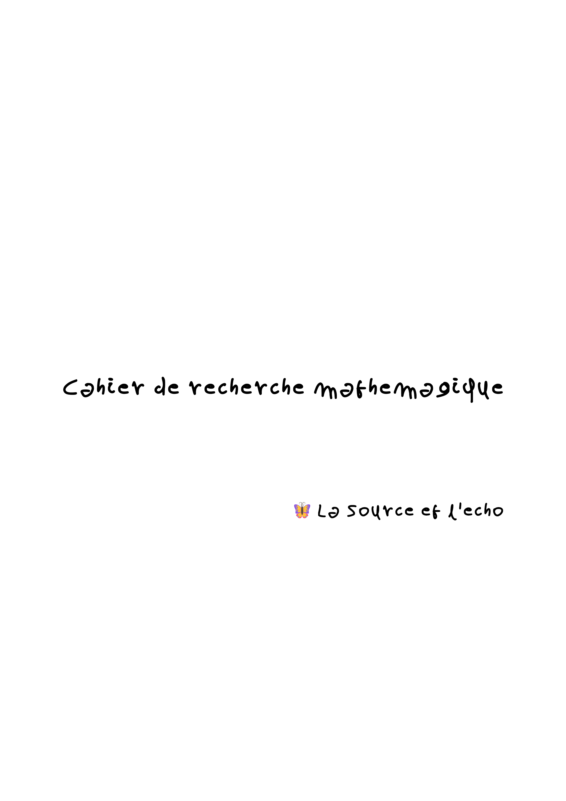
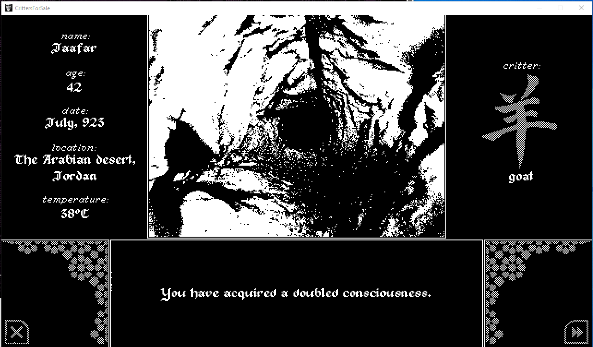
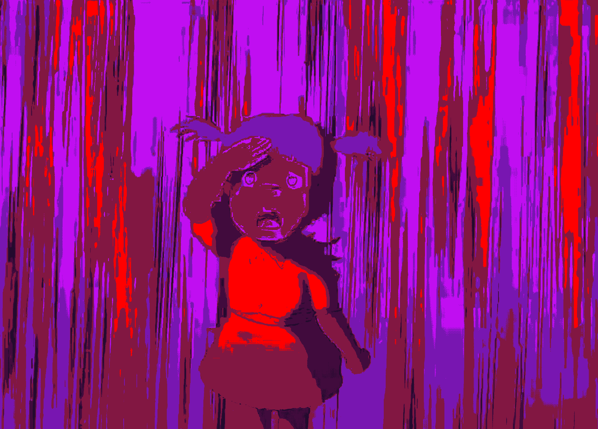

C'est l'histoire de deux gars qui découvrent un livre, un cahier, qui se construit en même temps qu'ils le parcourent
Tentative numéro 4 727 (et des poussières)

On finit toujours par devenir le personnage de sa propre histoire (JSB ou Filigrane ?)
L'ensemble Ε (On voit bien ici l'autiste qui sommeille en moi)
- Livres
- Jeux vidéo
- Blogs
- Youtube
- Correspondances e
- .txt
- Dessins
- BDA
- La pile de feuilles
zone de transit
Ecrire à l'envers ou reculons, écrire d'associations psychiques fermentées au thc.Meta sens irrévélé. Monstruosité sous-marine. La fosse. Les trous. Des trous partout. 2 balles qui dansent le jazz, du supplice au désir, de la norme à l'exceptionnelle expérience. Le monde n'est plus ce qu'il aurait été.Un jour de printemps, la mélasse se mélange. Les fleurs, qui n'ont jamais connu de saison, s'émerveillent d'être en vie. AdamEcrire ses états d'âme ou raconter l'histoire d'Anamorphée ? Elle m'appelle. Je la doigte avec allégeance. Il y a cette part d'intime en Elle qui demeure inaccessible. Je ne dois pas voir le visage masqué par un voile de matière noire. C'était quoi la poésie déjà ? C'était quoi l'horreur du cœur en passion ? Flamme, lave et magma coulent, envahissent et achèvent ma chair. ϛa brule, c'est vivant à l'intérieur ! Un serpent traverse les cavités d'une pomme géante. EveϛpeuragoniemalaiseexcitationA.N;]abaanakataanamorphoseanalogieanamnèse L'âme mystique, l'arme factice, pays arabes, serpent, corps bleus, sable et templier. Quelle est cette subtile attirance ? L'alchimisteLe puzzle est complété depuis bien longtemps en réalité.Tous les fragments existe. Le géoglypheimparfaitJSBTourner en rond sur le puzzle ou allez voir la vieLe puzzle multi dimensionnelc'est ce que je voulais dire au mondemoitoiepsilon nous sommes tous la face epsilon du Grand NolispED.X.M & NoLispEChercher à faire qu'un c'est l'unique butJe veux unifier les deux cotés du 4eme mur.
